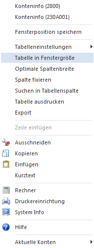
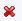
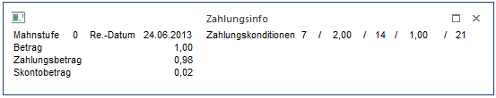
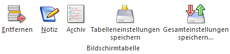

Wenn Buchungen mit der Buchungsart DZ oder KZ erfasst werden, werden zwei Tabellen angezeigt:
Ø Fakturentabelle
In der Fakturentabelle werden alle Rechnungen angezeigt, die für diesen Kunden/Lieferanten gespeichert sind (bzw. nur jene, die durch die Einschränkung über die OP-Nummer angezeigt werden können).
Ø Gutschriftentabelle
Kann der Zahlungsbetrag keiner bestehenden Faktura zugeordnet werden, kann in der Gutschriftentabelle eine negative Faktura (Gutschrift) oder eine Vorauszahlung (Zahlung zu einer noch nicht erstellten Faktura) erstellt werden.
Hinweis 1
Stellt man den Focus in der Buchungsstabelle in eine zuvor angelegte Gutschriftsbuchung, wird die Fakturentabelle ausgeblendet. Die Fakturentabelle kann mit dem Vorschlags- oder dem Wiederherstellen-Button angezeigt werden.
Die Zahlungstabelle kann durch Drücken der F7-Taste auf die Größe des Buchungsfensters umgestellt werden. Die Zahlungstabelle behält ihre Größe so lange, bis der Buchungsbetrag zur Gänze aufgeteilt wurde.
Klickt man mit der rechten Maustaste auf die Zahlungstabelle, kann durch Aktivieren der Option "Tabelle in Fenstergröße" eingestellt werden, dass die Zahlungstabelle immer in der Gesamtgröße des Buchungsfensters angezeigt wird. Wurde die Option aktiviert, wird auch ein Häkchen vor dieser Option angezeigt.

Jedes Mal, wenn eine Buchung mit Zahlung erfolgt, wird die Zahlungstabelle umgestellt. Die Zahlungstabelle wird erst dann wieder verkleinert, wenn der Zahlungsbetrag zur Gänze aufgeteilt wurde oder die Tabelle durch Drücken der TAB-Taste verlassen wurde.
Für die Zuordnung von Beträgen zu bestehenden Offenen Posten gibt es zwei Möglichkeiten, die auch in den Offenen Posten Parametern (Menüpunkt Stammdaten/Offene Posten Parameter) eingestellt werden können:
Ø automatischer Zahlungsvorschlag
Wurde in den Offenen Posten Parametern diese Option eingestellt, sucht das Programm die Faktura, die mit dem Zahlungsbetrag übereinstimmt. Wird keine Faktura gefunden, die dem Zahlungsbetrag entspricht, werden die Fakturen der Reihe nach vorgeschlagen - bis der Zahlungsbetrag komplett aufgeteilt ist. Sind beim Kunden bzw. Lieferanten viele Fakturen gespeichert, ist darauf zu achten, dass die ausgewählte Faktura nicht unbedingt in der Tabelle ersichtlich ist. Daher ist immer darauf zu achten, wie hoch der Wert im Feld "Aktueller Saldo" ist. Das Zahlungsfenster kann erst dann geschlossen werden, wenn der komplette Buchungsbetrag aufgeteilt wurde.
Hinweis 2
Wurde in den FIBU-Parameter die Option "OP-Nummer in der Buchungstabelle anzeigen" aktiviert, kann in der Buchungstabelle beim Erfassen der Buchung die Fakturennummer in das Feld "OP-Nummer" eingegeben werden. Es wird dann in der Fakturentabelle automatisch diese Faktura zur Zahlung selektiert.
Wird beim Buchen einer Zahlung im Mikrostapel eine OP-Nummer eingegeben, werden alle entsprechenden Fakturen in der Zahlungstabelle angezeigt.
Hinweis 3
Wird bei einer Zahlung, bei der der Zahlungsbetrag bereits komplett aufgeteilt ist, nachträglich wieder in die Fakturentabelle gewechselt, werden dort nur die zuvor zum Ausgleich selektierten Zahlungen angezeigt. Mit dem Vorschlag-Button können die ausgeblendeten Fakturen wieder angezeigt werden.
Ø Fakturenauswahl im Eingabefeld
Wurde in den Offenen Posten Parametern diese Option ausgewählt, wird beim Zahlungs-Fenster der Focus auf die Spalte Fakturennummer gesetzt. Dort kann (können) die Fakturennummer(n) eingegeben werden, die mit dem Buchungsbetrag ausgeglichen werden sollen. Steht der Cursor auf der gewünschten Faktura, muss die Eingabetaste gedrückt werden, damit der Buchungsbetrag als Zahlungsbetrag übernommen wird. Eventuelle Änderungen bezüglich Zahlungs- bzw. Skontobeträge müssen allerdings manuell vorgenommen werden.
Felder der Fakturentabelle
In der Fakturentabelle stehen folgende Felder zur Verfügung:
ü Fakturennummer
ü Rechnungsdatum
ü Zahlungsdatum
ü Leistungsdatum (wird nur angezeigt, wenn mit Abgrenzungsbuchungen gearbeitet wird)
ü FW - Fremdwährung (wird nur angezeigt, wenn die Faktura mit Fremdwährung gebucht wurde)
ü Zahlung
ü Skonto %
ü Skonto
ü Skonto editiert
ü Rest
ü Konto (wird nur angezeigt, wenn es sich um eine Gegenverrechnung handelt)
ü Fakturen-Text
ü Zahlungstext
ü Bruttobetrag (Gesamtbetrag der Faktura)
ü FW-Betrag
ü Buchungsdatum
ü Projektnummer
Wird eine Faktura ausgewählt, können folgende Felder editiert werden:
Ø Zahlungs-Datum
Es wird das Datum aus der Buchungszeile vorgeschlagen und kann editiert werden.
Ø Zahlungsbetrag
Wurden bereits Teilzahlungen durchgeführt, wird dieser Teilzahlungsbetrag hier angezeigt.
Ø Skonto %
Hier kann ein beliebiger Prozentsatz eingegeben werden. Dadurch wird automatisch der Skontobetrag aus dem skontierbaren Fakturenbetrag errechnet.
Ist in den FIBU-Parametern die Option "Skontotoleranzen beim Vorschlag berücksichtigen" aktiviert, wird der Toleranzprozentsatz aus der im Personenkonto hinterlegten Zahlungsbedingung zu den Skontoprozenten addiert und vorgeschlagen, wenn die Faktura innerhalb der Skontofrist bezahlt wird. Die Toleranztage der Zahlungskondition erhöhen die Skontofrist.
Ø Skontobetrag
Wurde für Teilzahlungen Skonti abgezogen, werden diese ausgewiesen. Dieser Betrag kann natürlich manuell editiert werden.
Bei Zahlung von Gutschriften wird kein Skonto automatisch vorgeschlagen. Wenn die Gutschrift mit Skonto bezahlt wurde, muss der Skontobetrag oder Skontoprozent manuell eingetragen werden.
Ø Skonto editiert
In diesem Feld wird angezeigt, ob ein Skonto gezogen wurde oder nicht oder ob der Skonto ggf. bearbeitet wurde, wobei diese Information nur bei den ausgewählten (aktivierten) Rechnungen ersichtlich ist. Dazu gibt es 3 Stati, die grafisch angezeigt werden:
ü

Kein Skonto
ü Skonto gezogen
Wenn diese Grafik
angezeigt wird, dann wurde entweder automatisch ein Skonto vorgeschlagen, oder
der Skontobetrag wurde manuell verändert.
ü  Skonto editiert
Skonto editiert
Wenn diese Grafik
angezeigt wird, dann wurden die Skontoeinstellungen (nicht der Skontobetrag)
editiert. Die Skontoeinstellungen können durch einen Doppelklick auf das
Symbol oder durch Anklicken des Button Skonto editieren (ALT + D) unterhalb
der Tabelle aufgerufen werden. Details dazu entnehmen Sie bitte dem Kapitel Skonto editieren.
Ø Zahlungstext
Hier kann ein 50 Zeichen langer Zahlungstext eingetragen werden.
Ø Zahlungsnotiz
Über F9 oder die Lupe kann in dem Feld Zahlungstext eine Notiz hinterlegt werden, In der Zahlungsnotiz kann beliebig viel Text eingetragen werden.
Damit vorhandene Fakturen leichter gefunden werden können (nur bei vielen Offenen Posten), kann die Tabelle, in der alle Fakturen angezeigt werden, nach verschiedenen Kriterien sortiert werden. Dabei stehen die Möglichkeiten "Fakturennummer", "Projektnummer", "Fakturendatum", "Zahlung" und "Betrag" zur Verfügung. Die Sortierung erfolgt durch einen Klick auf die entsprechende Tabellenspalte.
Hinweis
Bei Zahlung von Gutschriften wird kein Skonto automatisch vorgeschlagen. Wenn die Gutschrift mit Skonto bezahlt wurde, muss der Skontobetrag oder Skontoprozent manuell eingetragen werden.
Achtung
Durch Anklicken des Wiederherstellen Buttons werden alle bereits getroffenen Selektionen und Eingaben gelöscht.
Weitere Buttons
Ø Vorschlag
Wird dieser Button angeklickt, wird ein automatischer Zahlungsvorschlag durchgeführt, wobei solange Fakturen ausgewählt werden, bis der Buchungsbetrag zur Gänze aufgeteilt ist. Oder es wird die Faktura herangezogen, die dem Buchungsbetrag entspricht.
Ø Wiederherst.
Wird dieser Button angeklickt, wird die vorgenommene Selektion (die Checkbox vor den einzelnen Fakturen) in das Gegenteil umgewandelt: selektierte Fakturen werden deselektiert und umgekehrt. Dadurch können auf einfache Art und Wiese viele Fakturen ausgewählt werden.
Ø Archiv
Wird dieser Button angeklickt, sucht das Programm in allen vorhandenen Archiveinträgen nach dieser Rechnungsnummer.
Beispiel
Aus 100 Fakturen sollen 90 gezahlt werden. Es werden nur die 10 selektiert, die nicht bezahlt werden, durch Anklicken des Umkehren-Buttons werden die 10 Fakturen deselektiert, die restlichen werden zur Zahlung selektiert.
Ø Zahlungsinfo
Sollen nähere Informationen zu den einzelnen Rechnungen angezeigt werden, muss die Option Zahlungsinfo aktiviert werden. Dadurch wird ein weiteres Fenster geöffnet, in dem die Zahlungsinformationen angezeigt werden. Dieses Fenster kann beliebig am Bildschirm positioniert werden.

Welche Informationen bezüglich der Faktura angedruckt werden sollen, kann ebenfalls frei definiert werden.
Ø Skonto editieren
Sofern bei einer Rechnung ein Skontobetrag eingetragen ist, kann durch Anklicken des Buttons "Skonto editieren" ein Fenster geöffnet werden, wo diverse Einstellungen für die Skontobuchung (Skontokonto, Buchungstext etc.) verändert werden können. Details dazu finden Sie im Kapitel Skonto editieren.
Felder der Gutschriftentabelle
In der Gutschriftentabelle stehen folgende Felder zur Verfügung:
Ø Fakturennummer
In diesem Feld wird eine Fakturennummer eingegeben, unter der der neue OP geführt werden soll.
Ø Fakturenart
Je nachdem, ob es sich um eine Gutschrift oder eine Vorauszahlung handelt, wird eine der beiden Auswahlmöglichkeiten hinterlegt:
ü 0 - Gutschrift
ü 2 - Vorauszahlung
Bei einer Gutschrift wird die Zahlungskondition gemäß Personenkontenstamm verwendet und kann editiert werden. Vorauszahlungen sind sofort fällig. Daher stehen die Felder der Zahlungskonditionen nicht zur Verfügung.
Ø FW
Anzeige des verwendeten Fremdwährungs-Codes.
Ø Betrag
Übernahme des Betrages bzw. des Restbetrages, wenn zuvor Fakturen in der Fakturentabelle ausgewählt wurden.
Ø Skonto
Die Spalte Skonto wird nur angezeigt, wenn zur Zahlung die dazugehörige Rechnung innerhalb desselben Stapels vorhanden ist und bei der Zahlung die Fakturenart 2 - Vorauszahlung gewählt wurde. Beim Buchen des Stapels wird dann der OP ausgeziffert und eine entsprechende Skontobuchung abgesetzt.
Ø Datum
Vorbelegung des Datums der Buchungszeile.
Ø Fakturentext
Hier kann ein 50 Zeichen langer Zahlungstext eingetragen werden.
Ø Fakturennotiz
Über F9 oder die Lupe kann in dem Feld Fakturentext eine Notiz hinterlegt werden, In der Zahlungsnotiz kann beliebig viel Text eingetragen werden.
Ø Zahlungskonditionen
Übernahme der Zahlungskondition aus dem Personenkontenstamm bei Gutschriften. Wird eine Vorauszahlung gebucht, kann keine Zahlungskondition hinterlegt bzw. bearbeitet werden.
Ø OP-Kennzeichen
Das Zahlungskennzeichen wird aus dem Personenkontenstamm vorgeschlagen (Zahlungskennz. in FIBU-Fenster) und kann übersteuert werden. Im Zahlungsverkehr kann der Zahlungsvorschlag nach diesem Kennzeichen selektiert werden (z.B. Fakturen, die mit Scheck gezahlt werden sollen, von einer bestimmten Hausbank überwiesen werden sollen, etc.).
Ø Kostenträger
Hinterlegung eines Kostenträgers. Mittels dieses Kostenträgers kann im Zahlungsverkehr eine Selektion vorgenommen werden.
Ø Projektnummer
Hier kann eine Projektnummer eines Kunden- oder Serviceprojektes eingetragen werden, nicht angelegte Projektnummern und Kampagnen sind nicht zulässig. Projektnummern können sowohl für Fakturen und Gutschriften als auch für Vorauszahlungen eingetragen werden. Wird zu einem späteren Zeitpunkt die Vorauszahlung einer Faktura zugewiesen, wird die Projektnummer entfernt.
Ø Bankverbindung
Hinterlegung einer Bankverbindung aus dem Personenkontenstamm.
Buttons

Ø Entfernen
Mittels des Entfernen-Buttons kann eine Zeile aus der Gutschriftentabelle herausgelöscht werden.
Ø Notiz
Über diesen Button wird die Notiz zur Gutschrift / Vorauszahlung aufgerufen.
Ø Archiv
Über diesen Button wird das Archiv aufgerufen.
Ø Tabelleneinstellungen speichern
Die Spalten einer Tabelle können grundsätzlich an beliebige Positionen verschoben, bzw. in der Breite entsprechend angepasst werden. Durch Anwahl des Buttons "Tabelleneinstellungen speichern" werden die Einstellungen benutzerspezifisch gespeichert und bei dem nächsten Aufruf des Programmpunktes wieder vorgeschlagen.
Ø Gesamteinstellungen speichern
Im Gegensatz zu "Tabelleneinstellungen speichern" können mit "Gesamteinstellungen speichern" mehrere Tabellenaufbauten gespeichert und nach Wunsch geladen werden. Zusätzlich werden Sonderfunktionen der Tabelle (z.B. "Spalte gruppieren") ebenfalls bei der Speicherung bedacht.
Zahlungssammelkonto
Wird eine Zahlungsbuchung auf ein Personenkonto gebucht, das bei einem oder mehreren anderen Personenkonten dieses Konto als Zahlungssammelkonto im Personenkontenstamm hinterlegt hat, werden in der Zahlungstabelle auch die offenen Fakturen dieser Konten angezeigt. Diese Zeilen werden in einer anderen Farbe dargestellt.
Was tun, wenn eine Zahlung verbucht werden soll, obwohl es keine Faktura gibt?
Sind keine Fakturen vorhanden (z.B. bei Vorauszahlungen), muss in der Fakturentabelle unter Fakturenart "Vorauszahlung" markiert werden. Wird die Faktura anschließend mit der gleichen Belegnummer erfasst, wird die Faktura automatisch der Zahlung zugeordnet. Durch diese Funktion lassen sich auch Zahlung und Faktura innerhalb eines Buchungsstapels erfassen.